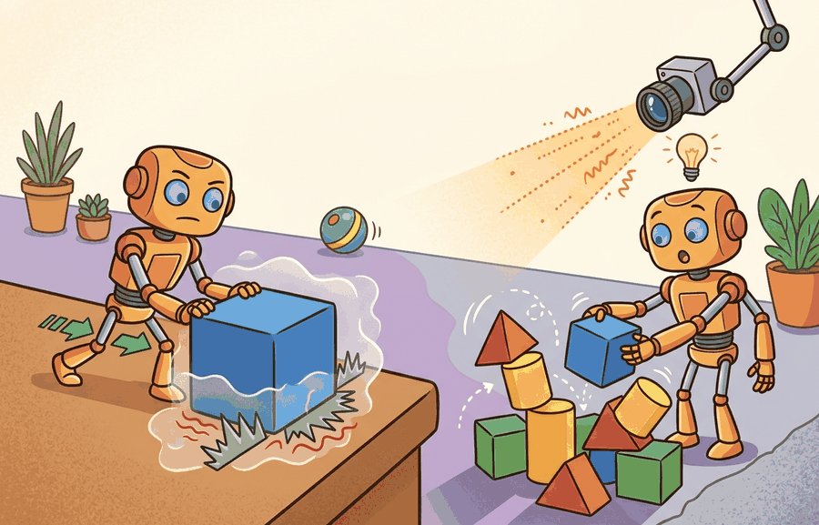

A Careful Control Loop

Contact, friction, and why contact-rich sim is hard is one lens on dynamics and simulation math. We study it because an embodied agent needs decisions that survive contact with noisy sensors, delayed effects, and changing environments.
This section develops the technical contract for Contact, friction, and why contact-rich sim is hard into a usable mental model. First we define the object of study, then we connect it to the agent loop, then we test it with a compact implementation.
The key question in Contact, friction, and why contact-rich sim is hard is practical: what must the agent know, what can it observe, what action is available, and what evidence shows that the action worked under the stated conditions?
A representation earns its place when it changes the measurable action interface. In Contact, friction, and why contact-rich sim is hard, the reader should keep asking which decision becomes easier, safer, or more reliable.
Theory
For Contact, friction, and why contact-rich sim is hard, the practical design rule is to make the interface inspectable before optimization begins: inputs, outputs, units, latency, bounds, and failure labels should all be visible in the saved artifact.
The mechanism in Contact, friction, and why contact-rich sim is hard is the contract between representation and action. Name what enters the module, what leaves it, which assumptions make that transformation valid, and which log would reveal a bad handoff.
Worked Example: Impulse-Based Contact With Restitution and a Friction Cone
Hard contact is hard because it is a constrained, set-valued problem. An impulse-based resolution sidesteps stiff penalty forces by directly computing the impulse $J = (J_n, J_t)$ that corrects the relative velocity at the contact point in a single step. Two physical laws bound that impulse:
- Normal restitution. The post-impact normal velocity reverses by a factor of the coefficient of restitution $e \in [0,1]$: $v_n^{+} = -e\, v_n^{-}$. With $e=1$ the bounce is perfectly elastic; with $e=0$ the contact is fully plastic.
- Coulomb friction cone. The tangential impulse is limited by $\lVert J_t \rVert \le \mu J_n$. Inside the cone the contact sticks (relative tangential velocity is driven to zero); on the cone boundary it slides and friction opposes the slip direction.
The example resolves a point mass striking the ground at an angle. It computes the normal impulse from restitution, then clamps the sticking tangential impulse to the friction cone, which is exactly the projection a contact solver performs at every active contact.
import numpy as np
def resolve_contact(v_in, m, normal, e, mu):
"""Impulse-based resolution of a point mass hitting a surface.
v_in : incoming velocity (2D)
normal : unit surface normal pointing away from the surface
e : coefficient of restitution in [0,1]
mu : Coulomb friction coefficient
Returns post-impact velocity and the applied impulse."""
n = normal / np.linalg.norm(normal)
t = np.array([-n[1], n[0]]) # tangent direction
vn = v_in @ n # normal component (negative if approaching)
vt = v_in @ t # tangential component
if vn >= 0: # separating, no contact impulse
return v_in, np.zeros(2)
# Normal impulse enforces v_n^+ = -e * v_n^-.
Jn = -(1 + e) * vn * m # >= 0
# Sticking tangential impulse would cancel all tangential velocity.
Jt_stick = -vt * m
Jt_max = mu * Jn # friction-cone limit
if abs(Jt_stick) <= Jt_max:
Jt = Jt_stick # inside cone: stick
mode = "stick"
else:
Jt = -np.sign(vt) * Jt_max # on cone: slide, oppose slip
mode = "slide"
J = Jn * n + Jt * t
v_out = v_in + J / m
return v_out, J, mode
m = 0.5
v_in = np.array([3.0, -2.0]) # moving right and down
normal = np.array([0.0, 1.0]) # floor normal points up
for e, mu in [(0.0, 2.0), (0.8, 0.5), (0.8, 0.05)]:
v_out, J, mode = resolve_contact(v_in, m, normal, e, mu)
vn_out = v_out @ normal
print(f"e={e} mu={mu:<4} -> v_out={np.round(v_out,3)} "
f"vn_out={vn_out:+.3f} mode={mode}")
The output shows the three regimes a contact-rich simulator must get right: with $e=0$ the normal velocity is killed and high friction makes the contact stick; with $e=0.8$ the mass bounces, $v_n^{+}=0.8\,|v_n^{-}|$; and with low $\mu$ the tangential impulse saturates on the cone and the mass slides instead of sticking. The set-valued switch between stick and slide is precisely the active-set decision that makes contact-rich simulation non-smooth and timestep sensitive.
For Contact, friction, and why contact-rich sim is hard, the hand-built fragment exposes the physical assumption before maintained tools take over. MuJoCo, MJX, Drake, Pinocchio, and Isaac Lab are useful only when the same mass, contact, actuator, and timestep contract is preserved.
Practical Recipe
- Write the observation, action, and success metric before choosing a model.
- Build a baseline that is simple enough to debug by inspection.
- Add the library implementation only after the baseline behavior is understood.
- Record failures as structured cases: perception error, state error, planning error, control error, or evaluation error.
- Run at least one perturbation test before trusting the result.
The common mistake in Contact, friction, and why contact-rich sim is hard is to celebrate the component score before checking the closed-loop handoff. The failure usually appears at the boundary: stale state, wrong frame, delayed action, saturated actuator, or metric that ignores the real task cost.
A robotics team using Contact, friction, and why contact-rich sim is hard should log not only final success, but intermediate observations, chosen actions, controller status, and recovery events. The logs reveal whether the method is solving the task or merely passing the easiest episodes.
For contact, friction, and why contact-rich sim is hard, the useful test is simple: could a teammate point to the log line, plot, or trace that proves the idea changed the agent's next action?
For Contact, friction, and why contact-rich sim is hard, treat frontier claims as hypotheses until they expose enough detail to reproduce the result: data boundary, embodiment, controller interface, evaluation panel, and failure cases.
Can you name the observation, state estimate, action, success metric, and most likely failure mode for Contact, friction, and why contact-rich sim is hard? If not, the system boundary is still too vague.
Production Pattern
Contact, friction, and why contact-rich sim is hard sits inside the Part II robotics contract: geometry defines where things are, kinematics defines what motion is possible, dynamics defines what motion costs, control defines how errors are corrected, and sensing defines what the agent can know on time.
Inspect contact as a numerical model with solver settings, not as a perfect physical event. This makes the section useful to students, builders, and researchers at the same time: the idea has an intuitive role, a formal interface, a runnable check, and a failure mode that can be reproduced.
Contact is hard because the model changes the instant two bodies touch. Before contact, the bodies follow smooth free motion. At contact, a constraint force appears, penetration must stay small, tangential slip may switch between sticking and sliding, and the solver must choose impulses that satisfy all of those requirements at once.
A contact-rich simulator is not only integrating forces. It is repeatedly deciding which constraints are active. Small pose changes can create a different active set, so a policy that looks robust in free space can become brittle when grasping, pushing, walking, or sliding.
For Contact, friction, and why contact-rich sim is hard, dynamics adds causes of motion: forces, torques, inertia, contact impulses, and integration. Keep units, solver step, contact parameters, and energy behavior visible.
| Tool or Library | What It Handles | Verification Check |
|---|---|---|
| MuJoCo | runs articulated dynamics and contact simulation for robot learning experiments | Verify timestep, solver parameters, contact settings, and reset semantics. |
| MJX | runs articulated dynamics and contact simulation for robot learning experiments | Verify timestep, solver parameters, contact settings, and reset semantics. |
| Drake | models dynamical systems, multibody plants, optimization, and controllers | Verify scalar type, plant finalization, frame convention, and solver status. |
| Pinocchio | computes articulated-body kinematics, dynamics, and derivatives | Verify model frames, joint ordering, and derivative convention against the URDF. |
| Isaac Lab | scales robot-learning simulation with GPU workflows and sensor-rich scenes | Verify environment parity, reset distribution, and logged seeds before training. |
Use this recipe when turning Contact, friction, and why contact-rich sim is hard into code, a simulator experiment, or a robot diagnostic. The point is not to use every library. The point is to keep the hand-built baseline and the maintained-tool path comparable.
- Specify mass, inertia, actuator limits, contact model, timestep, and solver tolerance before running a rollout.
- Run one free-motion test and one contact test with logged energy, constraint violation, and penetration depth.
- Compare the hand calculation with MuJoCo, Drake, Pinocchio, or MJX on the same model and timestep.
- Store solver settings, random seed, initial state, trajectory, and failure labels in one artifact.
- Scale to Isaac Lab or GPU-parallel simulation only after a small model passes deterministic checks.
For Contact, friction, and why contact-rich sim is hard, compare methods only through one saved artifact that preserves the inputs, outputs, units, timestamps, latency budget, configuration, seed, metric definition, and failure labels relevant to this section. The comparison is meaningful only when the same script evaluates the same panel.
Extend the section exercise by adding one perturbation specific to Contact, friction, and why contact-rich sim is hard and one latency or uncertainty check. Save the result in the EvidenceRecord schema, then explain which library output you trust and why.
For Contact, friction, and why contact-rich sim is hard, distrust smooth simulation until the section-specific physical assumption has been stress-tested: timestep, contact stiffness, damping, friction, actuation, and energy behavior should each have a small diagnostic.
Technical Core
Contact, friction, and why contact-rich sim is hard needs a topic-native core: variables, equations or system contracts, an algorithmic procedure, an expected output, and a failure diagnosis. Figure 6.3.T summarizes the chain this section must preserve when moving from a teaching example to a real embodied system.
A hard unilateral contact can be summarized by $\phi(q)\ge 0$, $\lambda_n\ge 0$, and $\phi(q)\lambda_n=0$, where $\phi(q)$ is signed separation and $\lambda_n$ is the normal contact force or impulse. Friction adds the Coulomb condition $\|\lambda_t\|\le \mu\lambda_n$, with sticking inside the cone and sliding on its boundary. Many simulators soften or regularize these constraints, so record the contact model rather than treating $\lambda$ as a direct measurement of the real world.
- Log signed distance, normal impulse, tangential impulse, slip speed, and penetration depth for each contact pair.
- Check whether $\lambda_n$ appears only when separation is near zero and whether tangential impulse stays inside the friction cone.
- Sweep timestep, friction coefficient, contact stiffness, damping, and solver iterations on the same initial state.
- Classify failures as tunneling, chatter, sticking when sliding is expected, sliding when sticking is expected, or solver nonconvergence.
| Contract Field | What To Specify | Why It Matters |
|---|---|---|
| State and observation | Variables, units, timestamps, frames, and uncertainty. | Prevents a model score from being mistaken for robot capability. |
| Action interface | Command type, limits, update rate, and safety fallback. | Makes the learned or planned output executable. |
| Evidence artifact | Trace, metric, configuration, seed, and failure label. | Allows baseline and library path to be compared in one pass. |
| Tool path | MuJoCo, Drake, Isaac Sim, Gazebo, PyBullet, SAPIEN, NumPy | Shows the practical library route after the mechanism is understood. |
For Contact, friction, and why contact-rich sim is hard, expected output is a state trace with the relevant physical invariant: bounded energy error for free motion, bounded penetration for contact, and a solver-status field that explains divergence.
Contact, friction, and why contact-rich sim is hard is validated by conserved quantities where they should hold, stable contact where contact is expected, and reproducible divergence under a named parameter perturbation.
Section References
Core references for Contact, friction, and why contact-rich sim is hard: Modern Robotics; Murray, Li, and Sastry; Siciliano et al.; LaValle; and the official documentation for Drake, MuJoCo, Pinocchio, CasADi, python-control, GTSAM, ROS 2, and OpenCV as applicable.
Use these references to check notation, frame conventions, solver assumptions, and library behavior before comparing hand-built and maintained-tool implementations.
Contact, friction, and why contact-rich sim is hard is useful when it makes the perception-action loop more reliable, not when it merely adds a more impressive model name.
Design a method-matched experiment for Contact, friction, and why contact-rich sim is hard. Specify the environment, observations, actions, metric, one perturbation, and the library output you would compare against the hand-built baseline.